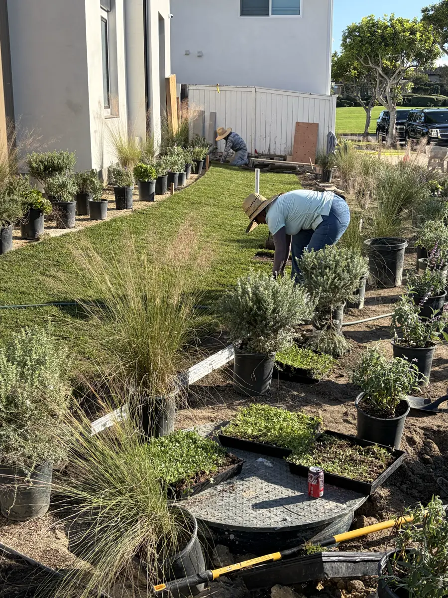

Quality work and the relationships behind it.
As GALO Masonry, Inc., we specialize in custom masonry, concrete and hardscape construction for homeowners, custom homebuilders and general contractors throughout Newport Coast and coastal Orange County.
Our approach combines skilled workmanship, thoughtful planning and dependable project execution. From architectural masonry and custom driveways to expansive patios and complete hardscape transformations, we take pride in spaces that are beautiful, functional and built to last.
Every project is an investment in someone's home or vision. That's why we care as much about the relationships we build as about the work itself.
